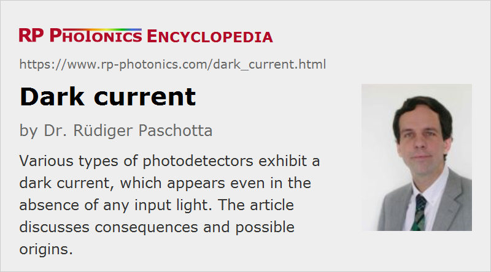

Dark Current
Definition: a current from a photodetector which occurs even in the absence of a light input
German: Dunkelstrom
Category: physical foundations
How to cite the article; suggest additional literature
Author: Dr. Rüdiger Paschotta
Most photodetectors such as photodiodes, phototransistors, CCD sensors and phototubes produce a signal current which is more or less proportional to the incident optical power. However, even in the absence of any light input, there is often some tiny amount of DC current, which one calls the dark current. An also possible fluctuating thermal current with zero mean value is usually not called a dark current.
For many applications, the dark current is totally negligible, but in some cases it matters – for example, when extremely small optical powers need to be detected. One may in principle subtract the dark current from the obtained signal either with analog electronics or with software, but that works only to a limited extent, because the dark current can be substantially temperature-dependent (see below), and it also exhibits shot noise.
Origins of Dark Current
The dark current of a photodetector can have different origins.
Dark Current in Photodetectors with Internal Photoelectric Effect
In photodiodes and other detectors with some p–n or p–i–n junction, it is often caused by thermal excitation (generation) of carriers – not necessarily directly from valence to conduction band, but possibly through defect states related to crystal defects or impurities. The rate of such thermal processes depends not only on the active area, but also critically on the temperature and on the band gap energy of the material, and also on the operation voltage (particularly near the breakdown voltage, where impact ionization can occur). At high voltages, tunneling through the depletion region may also contribute.
For visible light detectors such as silicon-based photodiodes, the dark current can be very small (e.g. in the picoampere region) (even for significant bias voltages) and is then negligible for most applications. Germanium photodiodes exhibit much higher dark currents which is however mostly not due to their somewhat lower band energy. Indium gallium arsenide diodes, which also have a reduced bandgap energy compared with silicon, also exhibit a relatively low dark current.
For materials with substantially smaller band gap, dark current can be a serious problem and may thus enforce the operation at substantially reduced temperatures. Therefore, some mid-infrared cameras, for example, need to be equipped with a Stirling cooler for operation around 100 K or even lower.
For operation near the break-down voltage, the dark current can become far stronger than for lower voltages.
Dark currents may also be generated by some leakage currents which are not related to thermal excitation.
In any case, a dark current can normally not occur for operation with zero bias voltage, since there is no energy supply available for it – at least as long as the temperature of the device is uniform, excluding any Peltier effects. Therefore, one may operate a photodiode, for example, with zero bias voltage in cases where influences of a dark current must be avoided.
Of course, drifts of output signals may also occur in related electronics, for example due to bias drifts of operational amplifiers. Therefore, a non-zero output signal does not necessarily indicate a dark current of the detector.
Dark Current in Photodetectors with External Photoelectric Effect
The primary cause for a dark current is usually thermionic emission on the photocathode. This means the thermal excitation of electrons. Thermionic emission can be substantial for cathode materials with very low work function, as required for infrared detection. It is also strongly temperature-dependent; low-temperature operation is thus a very effective measure for reducing the dark current. The dependence on the operation voltage is weak.
For quite high operation voltages, there can be a steeper rise of dark current due to field emission at various locations in the bulb. That can lead to accelerated aging.
Some current is contributed by the ionization of residual gas, i.e., due to the non-perfect vacuum. This is particularly the case for devices operated with higher voltages, for example photomultipliers.
A typically quite weak contribution comes from the leakage current due to non-perfect electrical isolation.
It is also possible that some unwanted light is generated by scintillation, e.g. when electrons hit the glass tube. At a usually very low level, there are weak flashes of light caused by cosmic rays and radioactive substances e.g. in the glass tube or the near surroundings.
Questions and Comments from Users
Here you can submit questions and comments. As far as they get accepted by the author, they will appear above this paragraph together with the author’s answer. The author will decide on acceptance based on certain criteria. Essentially, the issue must be of sufficiently broad interest.
Please do not enter personal data here; we would otherwise delete it soon. (See also our privacy declaration.) If you wish to receive personal feedback or consultancy from the author, please contact him e.g. via e-mail.
By submitting the information, you give your consent to the potential publication of your inputs on our website according to our rules. (If you later retract your consent, we will delete those inputs.) As your inputs are first reviewed by the author, they may be published with some delay.
See also: photodetectors, photodiodes
and other articles in the category physical foundations
|  |
If you like this page, please share the link with your friends and colleagues, e.g. via social media:
These sharing buttons are implemented in a privacy-friendly way!